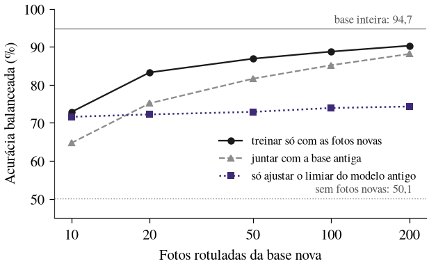

Generalização de classificadores de defeitos em grãos de soja entre equipamentos: um estudo com dados abertos
Thalles Paul Leandro Mota
Resumo. Equipamentos que classificam grãos de soja por imagem só padronizam a classificação se o modelo mantiver o desempenho em unidades onde não foi treinado. Este relatório mede essa perda com duas bases públicas (10.343 imagens), tratando três regiões como três unidades de equipamento. Separar as fotos uma a uma, e não por bandeja, inflou a acurácia balanceada em 4,4 pontos. Numa unidade nunca vista, o modelo perdeu 14,2 pontos, recuperados quando parte das amostras da unidade entrou no treino. Entre bases de origens diferentes, o desempenho caiu ao nível do acaso; 50 imagens rotuladas da base nova levaram a acurácia a 86,9. Enviar à revisão humana os 10% de grãos mais duvidosos elevou a acurácia de 91,4 para 95,2 em unidade conhecida, mas pouco ajudou em unidade nova, onde o modelo erra com confiança. Das seis previsões registradas antes dos testes, 4 se confirmaram.
Ferramentas: Python · PyTorch · timm · scikit-learn · pandas · matplotlib · LaTeX. Código: privado; demonstração sob solicitação.
1. Problema
No Brasil, a soja é classificada pelo padrão oficial do Ministério da Agricultura (IN 11/2007): numa amostra de cada carga, um classificador separa visualmente os grãos avariados e pesa cada grupo. Equipamentos que fotografam cada grão e o classificam com aprendizado de máquina prometem rapidez e o mesmo critério em todas as unidades, desde que o modelo mantenha o desempenho numa unidade em que não foi treinado.
2. Método
Duas bases abertas: SOYPR (4.830 imagens de três regiões do Paraná, sete classes) e Mendeley (5.513 imagens, cinco classes, licença CC BY 4.0, auditada para imagens repetidas). Treino e teste separados por bandeja física e congelados antes de qualquer modelo; avaliação deixando cada unidade de fora; modelos concorrentes medidos nas mesmas bandejas, em 20 repetições; hiperparâmetros escolhidos sem tocar no teste; seis previsões registradas antes dos testes.

3. Principais resultados
- Numa unidade nunca vista, a acurácia balanceada caiu de 79,4 para 65,2, na mesma direção nas 20 repetições; com parte das bandejas da unidade no treino, o modelo geral chegou a 80,2.
- Entre bases de origens diferentes, o desempenho caiu ao acaso; treinar só com as imagens novas foi melhor do que juntá-las à base antiga (86,9 com 50 imagens e 90,3 com 200).
- Uma rede mais recente (DINOv2) perdeu menos na unidade nova que a do artigo de referência (+4,2 pontos), sem eliminar a perda.
- A dúvida do modelo orientou bem a revisão humana em unidade conhecida (91,4 para 95,2 revisando 10% dos grãos), mas não em unidade nova.

4. Aplicação prática
- Equipamento já conhecido: comitê de duas redes e revisão humana dos 10% de grãos mais duvidosos (acurácia balanceada por grão de 91,4 para 95,2).
- Equipamento novo, sem dados dele: validar antes de usar; mesmo o melhor modelo (DINOv2) ficou em 76,8 por grão.
- Equipamento novo, com parte das amostras dele no treino: o modelo geral volta ao nível do modelo local (87,8 por grão).
- Outra base de imagens: coletar de 50 a 200 imagens rotuladas e treinar só com elas (86,9 e 90,3, intacto ou defeituoso); avaliar sempre por amostra e por unidade, nunca foto a foto.
5. Limitações
As unidades do estudo são regiões fotografadas, e não equipamentos distintos; os efeitos do equipamento, da região e do classificador de referência não se separam. A comparação entre bases usa apenas a tarefa intacto ou defeituoso.
Referências
- Lin, W. et al. (2023). Soybean image dataset for classification. Data in Brief, 48:109300.
- MAPA (2007). Instrução Normativa n. 11, de 15 de maio de 2007: Regulamento Técnico da Soja.
- Pereira, G. M. L., Foleis, J. H., Brito Jr., A. S. e Bertolini, D. (2024). A database for soybean seed classification. In 37th SIBGRAPI. IEEE.